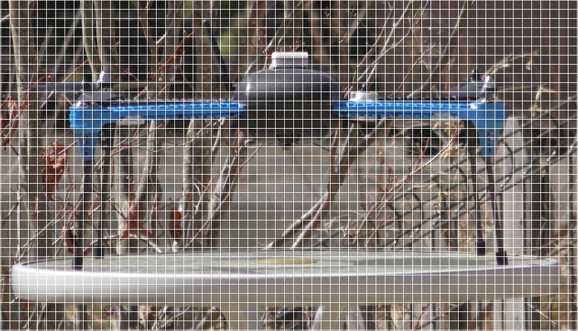
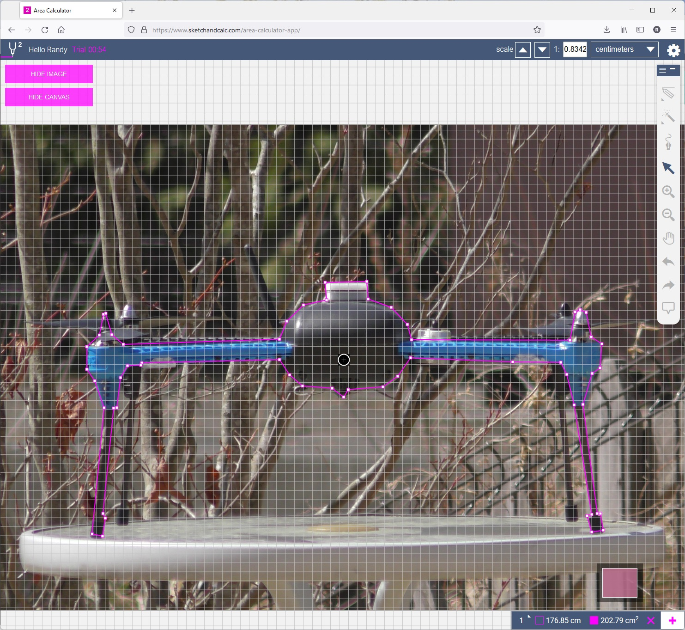
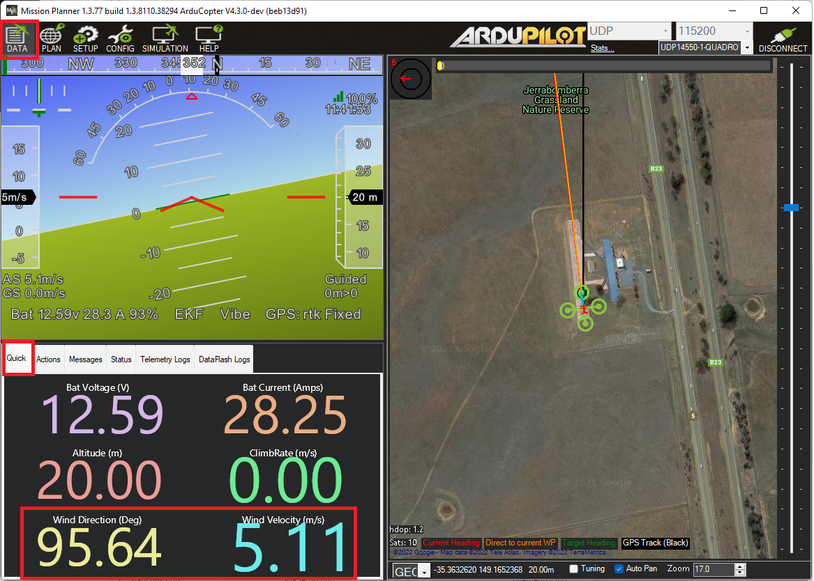
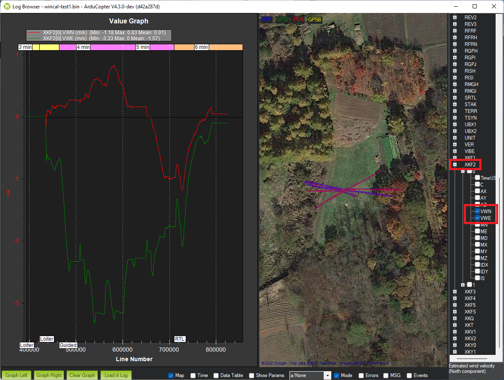

Windspeed Estimation and Baro Compensation¶
ArduPilot’s EKF can estimate the windspeed a multicopter is flying in without requiring an airspeed sensor. This can be useful information for the pilot but it can also be used to compensate for wind related barometer interference. This interference can occur on vehicles where the autopilot is exposed to the open air and can lead to the vehicle climbing or descending a few meters especialy after slowing down from fast-forward flight.
The mechanism and setup are explained below.
Calculate the Body Drag Coefficient¶
Weigh the vehicle including the battery. The weight should be expressed in kg.
Measure the front and side area of the vehicle in m^2 using one of the methods below
Take two pictures of the vehicle (one of the front, one of the side) from a few meters away
Measure the surface area in cm^2 using one of these online tools:
Use this free online tool to overlay a grid on the image. Scale the size of the grid squares to match the known width or length of the vehicle (in cm). Count the total number of squares which include parts of the vehicle (do not including propeller blades). This is the area in cm^2
SketchAndCalc offers a free trial (1hr only) and makes it relatively easy to scale and then measure the area (in cm^2) of a polygon drawn over the vehicle

Divide the area by 10,000 to convert from cm^2 to m^2
{kind=link}
{kind=link}
Update the drag coefficient parameters
EK3_DRAG_BCOEF_X = mass in kg / frontal area in m^2
EK3_DRAG_BCOEF_Y = mass in kg / side area in m^2
For the IRIS shown above:
Weight: 1.45kg
Frontal area: 203 cm^2 = 0.0203 m^2
Side area: 217 cm^2 = 0.0217 m^2
EK3_DRAG_BCOEF_X = 1.45kg / 0.0203 m^2 = 71.4
EK3_DRAG_BCOEF_Y = 1.45kg / 0.0217 m^2 = 66.8
Calculate the Propeller Drag Coefficient¶
The EK3_DRAG_MCOEF should be calculated after performing a flight test as described here in the video.
Fly in a low wind conditions in a wide open space
Optionally set LOG_DISARMED = 1 and LOG_REPLAY = 1 to allow post flight tuning with Replay
Arm and takeoff in Loiter mode (this ensures the EKF has a good position estimate) and fly to the middle of the testing area
Switch to AltHold and let the vehicle drift downwind to establish the wind direction and speed
Yaw the vehicle so the nose faces into the wind and apply full forward pitch until the vehicle has finished accelerating upwind
Release the pitch stick and allow the vehicle to decelerate and then drift back to the starting line
Reposition the vehicle to a comfortable position
Yaw the vehicle 90 deg (e.g. clockwise) to the wind and apply full left roll stick until the quad has finished accelerating. Release the stick and allow the vehicle to again decelerate and drift back downwind to the starting line
Reposition the vehicle to a comfortable position
Repeat step 8 but with the vehicle facing backwards into the wind (pilot should pull back on the pitch stick to accelerate into the wind)
Repeat step 8 but with the vehicle’s right side facing into the wind (pilot should apply full right roll to accelerate into the wind)
Download the onboard logs for analysis as described in the video
The final value for EK3_DRAG_MCOEF is normally between 0.1 and 1.0.
Viewing Windspeed and Direction in Real-Time¶
Once enabled, the estimated wind speed is sent to the ground station in real-time via the WIND mavlink message. If using Mission Planner, on the Data page, select the “Quick” tab, double-click on any number shown and select “wind_dir” or “wind_vel”.
{kind=link}
Viewing Windspeed recorded in the Onboard Logs¶
The EKF’s wind speed estimate is recorded in the onboard log XKF2 message’s VWN and VWE fields
{kind=link}
Barometer Position Error Compensation¶
Once wind estimation has been enabled, it can be used to compensate for the wind’s effect on each barometer in each of four directions (foward, back, left right). The method to calculate each parameter’s value is discussed here in the video.
Perform a test flight
Fly the vehicle nose-first into the wind, then tail-first, then right-side first, then left-side first
Land and download the onboard logs
Calculate the position error coefficient for each direction
Calculate the air density (in kg/m^3) using an online calculator (like this one)
Calculate the static pressure error (in Pa) = -height * gravity * air density
Calculate the dynamic pressure = 0.5 * air density * airspeed^2
Position error coefficient = static pressure error / dynamic pressure. This value should be between -1 and +1
Enable the compensation and copy the calculated position error coefficients into the appropriate parameters. Below are the parameters for the first barometer.
Set BARO1_WCF_ENABLE = 1 to enable and then reboot the autopilot
BARO1_WCF_FWD: Pressure error coefficient in positive X direction (forwards)
BARO1_WCF_BCK: Pressure error coefficient in negative X direction (backwards)
BARO1_WCF_RGT: Pressure error coefficient in positive Y direction (right)
BARO1_WCF_LFT: Pressure error coefficient in positive Y direction (left)
BARO1_WCF_UP: Pressure error coefficient in positive Z direction (climbing)
BARO1_WCF_DN: Pressure error coefficient in negative Z direction (descending)